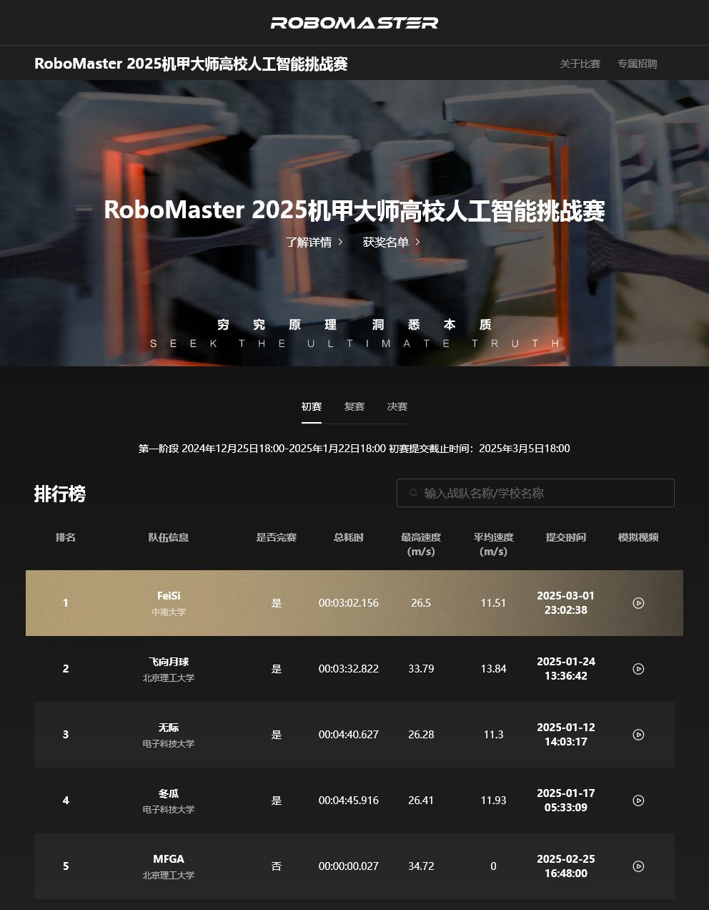
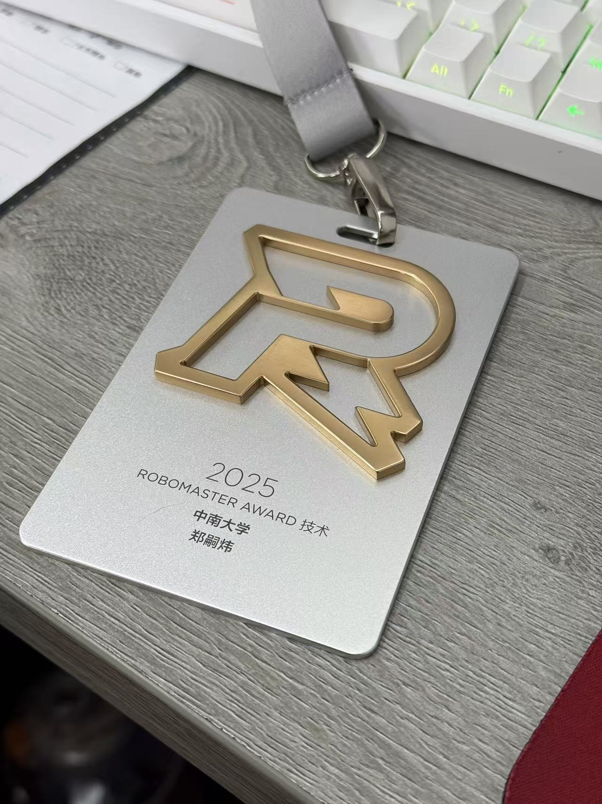

Closed-loop UAV planning and control for traversing a moving gate under dynamic spatial constraints.
Robotics and Autonomous Systems
郑嗣炜 Zheng Siwei
I am interested in field robotics and autonomous systems, with experience in UAV trajectory planning, reinforcement-learning-based flight control, high-speed autonomous racing, ROS navigation, and embedded perception/control. I was part of team FeiSi from Central South University, which ranked first in the preliminary round of the RoboMaster 2025 University AI Challenge. My work emphasizes deployable autonomy: algorithms are evaluated through closed-loop experiments on physical platforms rather than only in offline simulation.
我的研究与工程兴趣集中在具身机器人系统、无人机规划与控制、高速自主赛车、ROS 导航以及边缘端感知部署。 我所在的中南大学 FeiSi 队伍获得 RoboMaster 2025 机甲大师高校人工智能挑战赛初赛第一名。 我更关注“可部署”的自主系统：算法需要在真实硬件、真实场地和实时约束下完成闭环验证。
Research Highlights
Recent demonstrations and engineering results on physical robotic platforms.
A mobile frame/gate setup for evaluating perception, prediction, planning, and execution beyond static scenes.
Team FeiSi, Central South University, ranked 1st in the RoboMaster 2025 University AI Challenge preliminary round.
Policy deployment for UAV circular trajectory tracking, flight stability, and sim-to-real-oriented evaluation.
Selected Projects
Videos are included as concise evidence that the systems run on real platforms.
UAV trajectory planning through a dynamic gate
Developed a planning-and-control workflow for a UAV to traverse a dynamic gate. The experiment integrates trajectory generation, state feedback, and controller execution, with emphasis on feasibility and robustness in a moving-target setting.
F1TENTH high-speed autonomous racing
Built and tuned an F1TENTH racing platform for high-speed autonomous driving. The work covers track perception, speed profile design, local control, and repeated field tuning for stable operation close to the vehicle's limits.
Reinforcement-learning-based UAV circular flight
Evaluated an RL-based flight controller on a circular trajectory. The project focuses on tracking behavior, policy stability, and deployment-oriented control performance under physical flight dynamics.
Awards
Competition experience and technical recognition from robotics engineering practice.

Preliminary Round Champion, Team FeiSi, Central South University
Ranked first in the preliminary round of the RoboMaster 2025 University AI Challenge. The official ranking lists team FeiSi from Central South University as rank 1, with a total time of 00:03:02.156, maximum speed of 26.5 m/s, and average speed of 11.51 m/s.

RoboMaster Award, Technical Category
Received the RoboMaster technical award in 2025. The experience reflects hands-on engineering work across system integration, hardware/software debugging, competition constraints, and reliable field operation.
Competition Results
Selected measurable outcomes from autonomous racing and robotics competitions.
Team FeiSi, Central South University; total time 00:03:02.156.
Lap-time-oriented optimization on a high-speed autonomous racing platform.
Edge perception acceleration for aquatic robot obstacle avoidance.
Vision-based intelligent car system with real-time embedded control.
Earlier Robotics Projects
Selected projects from my previous homepage, retained here to show the continuity of my robotics work.
Outdoor robot navigation system
Built a robust outdoor navigation pipeline using ROS. The system used Cartographer for mapping, EKF fusion of IMU and odometry, AMCL for localization, A* for global planning, TEB for local planning, and Pure Pursuit for tracking. The project received a national second prize in the National University Students Intelligent Car Race.
Vision-based intelligent car competition system
Developed a real-time visual tracking and control stack in C++ on an Edgeboard platform, including image correction, adaptive thresholding, fuzzy PID control, serial communication, YOLOv3/PaddlePaddle inference, and an Infineon TC264 motion-control subsystem. The project achieved a national first prize in the competition.
NPU-accelerated perception for aquatic robot navigation
At Zhejiang University Huzhou Research Institute, accelerated YOLOv5 inference for an aquatic robot to 153 FPS using an NPU, integrated object recognition with path planning for obstacle avoidance, and contributed to paddle motion control and power-system integration.
Education and Experience
Central South University
M.E. Candidate in Computer Science.
Zhejiang University Huzhou Research Institute
ROS software engineering for aquatic robots, including NPU-accelerated perception, obstacle avoidance, paddle control, power integration, and field debugging.
Lanzhou University of Technology
B.Sc. in Control Science and Engineering. Robotics competitions and automation engineering projects.
Technical Skills
Planning and Control: trajectory generation, path tracking, fuzzy PID, Pure Pursuit, TEB, A*, speed-profile design
Robotics: ROS, Cartographer, AMCL, EKF sensor fusion, localization, navigation-stack integration
Learning and Perception: reinforcement learning, YOLOv3/v5, PaddlePaddle, image correction, adaptive thresholding, NPU acceleration
Embedded Systems: C++, Python, Linux, Edgeboard, Infineon TC264, serial communication, real-time field debugging
Contact
For robotics research, autonomous systems projects, or engineering collaboration, feel free to reach out.